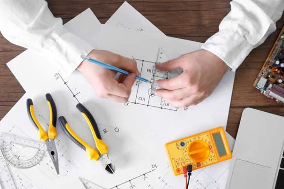

Energia para o
que vem pela frente.
Projeto, execução e suporte técnico em engenharia elétrica para empreendimentos que exigem segurança, eficiência e confiança.
da Instel Engenharia Elétrica.
Soluções que acompanham
cada fase do projeto.
Atuação técnica em engenharia elétrica, do planejamento à execução, com atenção a cada detalhe.
Projeto
Soluções desenvolvidas para cada necessidade, integrando viabilidade técnica, funcionalidade e planejamento.
Execução
Instalações e infraestrutura elétrica com mão de obra especializada e acompanhamento técnico.
Laudos técnicos
Inspeções, avaliações e documentos técnicos para instalações e sistemas elétricos.
Assessoria
Consultoria a profissionais e empresas para orientar soluções e otimizar investimentos.

Uma nova marca.
Os mesmos valores de confiança.
A INSTEC Engenharia Elétrica nasce em 2026, dando sequência a uma história profissional vinculada à Instel, cuja atuação teve início em 1985.
Nossa proposta é unir experiência técnica, planejamento e proximidade com o cliente para desenvolver soluções elétricas que façam sentido em cada empreendimento.
Conheça a INSTECProjetos que fazem
parte dessa história.
Uma seleção do acervo de obras divulgado no site da Instel, apresentada como referência histórica da trajetória que inspira a INSTEC.
As imagens e referências desta seção integram o portfólio histórico originalmente publicado pela Instel; não representam contratos atribuídos à pessoa jurídica INSTEC.
Do primeiro desenho
à solução final.
Uma abordagem que conecta análise técnica, planejamento e acompanhamento.
Entendimento
Escutamos as necessidades, o contexto e os objetivos do empreendimento.
Planejamento
Definimos caminhos técnicos coerentes com o escopo e as exigências do projeto.
Realização
Conduzimos o trabalho com acompanhamento, organização e atenção à qualidade.
Entrega
Valorizamos documentação técnica, segurança e clareza em cada etapa.